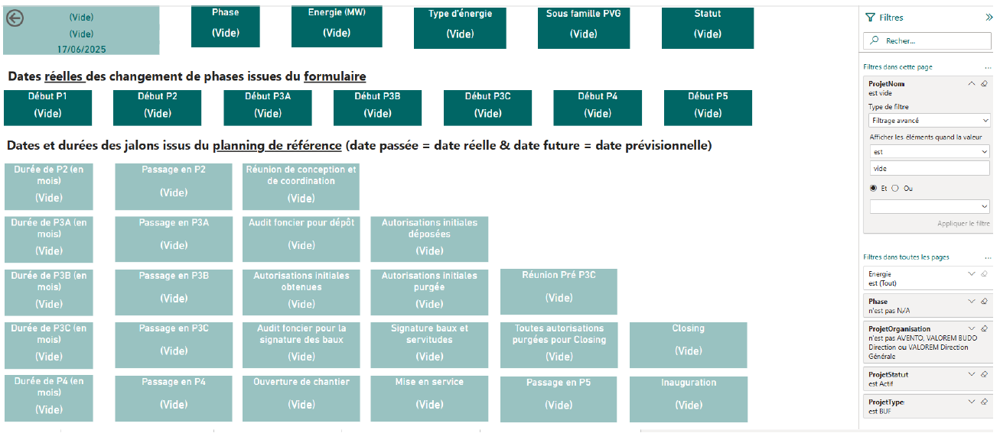

Objectifs de la mission
Durant mon stage de 3 mois au sein de l’entreprise VALOREM, spécialisée dans les énergies renouvelables. Celle-ci a changer de logiciel ERP récemment, passant de Akuitéo à Oracle à des fins d'harmonisations. Je devais donc aider à créer ou re-créer des visuels et des tableaux de bords à partir du cube VALOREM pour aider les chefs de projets dans leurs missions.
Déroulement de la mission
Durant mon stage de 3 mois au sein de l’entreprise VALOREM, spécialisée dans les énergies renouvelables, j’ai participé à la migration et au développement de tableaux de bord Power BI vers le nouvel ERP Oracle Cloud. Cette transition faisait partie du projet TOUCAN, visant à harmoniser les outils informatiques de l’entreprise.
Mes missions liées à ce projet étaient variées et ont porté sur plusieurs types de rapports : suivi des plannings de projets, performances des agences, opportunités de projets, et vue d’ensemble de la Business Unit France (BUF).
Chaque tableau de bord nécessitait la création ou la mise à jour de dimensions dans SQL Server, l’utilisation de données extraites depuis Oracle, et un traitement dans Power BI avec parfois des mesures DAX. Le rapport sur les plannings consistait à restructurer des données Excel issues de jalons projet, puis à créer des vues pivotées en SQL, validées ensuite par le service informatique avant exploitation dans Power BI.
Pour le tableau de bord des agences, il a fallu historiser les données de projets de 2021 à 2024, faire la correspondance entre les noms de projet selon les ERP (Akuitéo vs Oracle), et créer un outil réutilisable dans le futur. Le tableau de bord sur les opportunités visait à faciliter la préparation des revues trimestrielles. Deux dimensions ont été construites : l’une liée aux projets, l’autre non liée, afin d’englober les infos sur l’ensemble des opportunités.
L’organisation du travail passait par l’usage de Teams pour le suivi de tâches et PowerPoint pour le recueil des besoins utilisateurs.
J’ai également produit un guide d’historisation et documenté ses processus pour permettre la poursuite de son travail après mon départ. Je souligne l’importance de la rigueur méthodologique dans ce type de mission, en particulier dans la gestion des filtres Power BI, la préparation des données et la vérification de la conformité. Enfin, ce stage m’a permis
de renforcer mes compétences techniques (SQL, Power BI, Excel), mais aussi organisationnelles et méthodologiques, tout en découvrant les attentes concrètes d’une entreprise dans le domaine de la data visualisation. Je valorise aussi les échanges constructifs avec mes collègues, l’autonomie que j’ai pu développer, et la satisfaction de produire des outils directement utiles à l’entreprise.
Page du tableau de bord PLANNING
